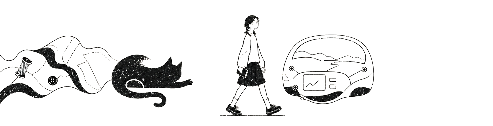
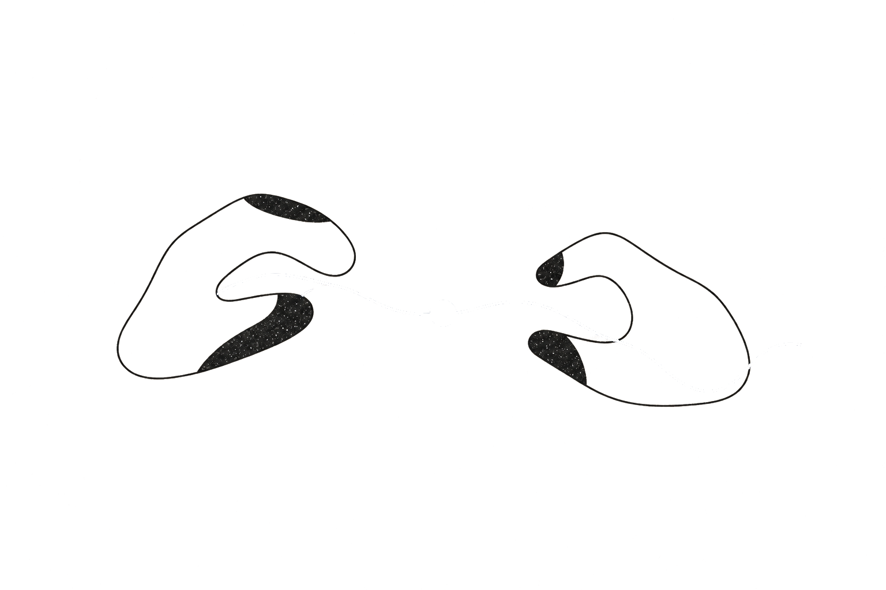

PRODUCT THINKING
让判断在约束中成形
01
ROLE OVERVIEW / 角色概览
从设计到产品
从设计方案，到定义问题，我慢慢走进了产品。

经历抽屉
ABOUT / 关于我
关于产品，我还有很多想弄明白的事。
我喜欢观察人，也喜欢追问一个产品为什么要这样做。
从 ID 到产品，我越来越在意的，是那些真正发生在用户身上的感受：哪里不顺、为什么不顺，还有没有更好的办法。
做产品时，我常常会问
- 人真的会这样用吗？先去看看真实发生的事
- 到底是哪里不顺？那些小小的感受也值得被看见
- 做出来以后呢？它有没有真的让体验好一点
02
WORKS / 精选项目
精选项目


WORKS / 精选项目
挑了几个项目，想和你分享。
它们来自不同的产品和场景，也是我一路做下来，最想留下来的几段经历。
四个项目
从车里，到宠物身边
做的是不同的产品，面对的也是完全不同的问题。
但做产品的方式很像：去现场、听用户、拆问题，然后尽可能把想到的事情做出来。
项目详情
03
EDUCATION / 教育经历
教育经历
设计教我感受，工程教我判断。
2024—2027
东华大学
机械工程学院
机械硕士
研究方向：工业设计工程
硕士阶段 · 个人荣誉
2025.07 “汇创青春”上海大学生文化创意作品展示活动 · 市级一等奖 · 个人
2020—2024
上海海事大学
徐悲鸿艺术学院
工业设计学士
本科阶段 · 个人荣誉
2022.02 上海市大学生创客大赛 · 市级三等奖 · 排名第一
2022.07 上海市大学生工业设计大赛 · 市级三等奖 · 个人
2022.07 中国“互联网+”大学生创新创业大赛 · 校级二等奖 · 排名第二
2022.08 中国好创意暨全国数字艺术设计大赛 · 国家级三等奖 · 个人
2022.08 “上图杯”先进成图技术与创新设计大赛 · 市级二等奖 · 个人
2022.09 “汇创青春”上海大学生文化创意作品展示活动 · 市级二等奖 · 个人
2022.11 全国大学生海洋文化创意设计大赛 · 国家级佳作奖 · 排名第二
本科阶段 · 志愿经历
2023 第六届进博会优秀志愿者
2021—2022 院学生会平面部部长
疫情防控志愿者 · 百人大清滩优秀志愿者
陆家嘴地铁站志愿者 · 徐悲鸿艺术学院迎新志愿者
ASK ME / 和我聊聊
看到这里，还有什么想问我的？
项目里写下的是最后呈现出来的东西，很多当时的判断、犹豫和取舍没有放进去。
如果你好奇，可以直接问我。
你的问题在线对话
NEXT / 继续往前
还有很多东西，我想亲手把它做出来。
关于人，关于体验，也关于一个产品究竟还能好到什么程度。
答案还没有想完。
那就继续做下去。
